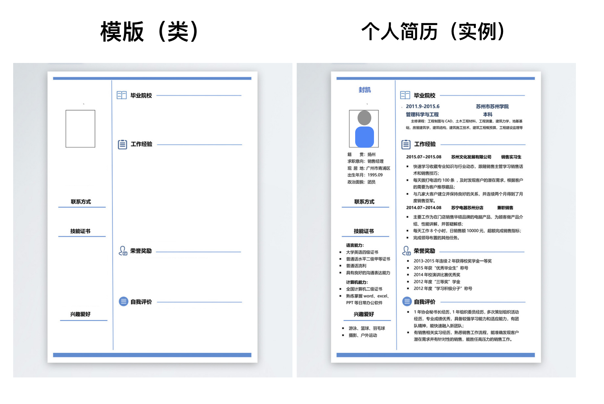
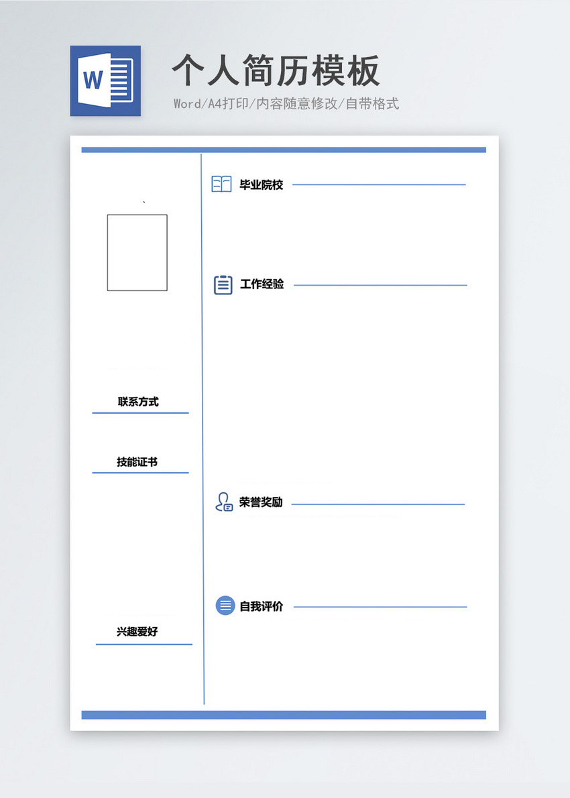
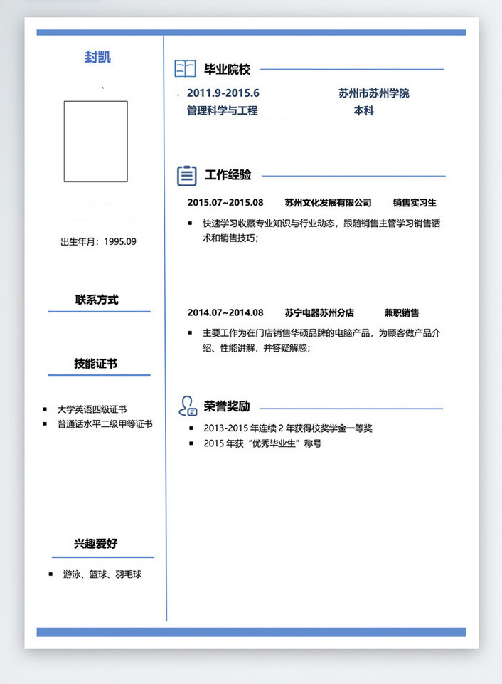

面向对象编程#
面向对象编程——Object Oriented Programming，简称OOP，是一种程序设计思想。OOP把对象作为程序的基本单元，一个对象包含了数据和操作数据的函数。
我们通过一个例子理解OOP。下面这个dict字典类型变量表示一个学生的个人信息：
student = {'name':'Rose',
'age':20,
'gender': 'Female'}
如果需要显示这个学生的年龄，我们就使用print语句：
def print_age(student):
print('%s: %s' %(student['name'], student['age']))
如果采用面向对象的程序设计思想，我们首选思考的不是程序的执行流程，而是Student这个变量应该被视为一个对象，这个对象拥有name和age这两个属性。如果要打印一个学生的年龄，首先必须创建出这个学生对应的对象，然后，让对象自己把自己的年龄打印出来。
class Student(object):
def __init__(self, name, age):
self.name = name
self.age = age
def print_age(self):
print('%s: %s' % (self.name, self.age))
print_age这个函数，在这里我们称之为对象的方法（Method）。面向对象的程序写出来就像这样：
jack = Student('Jack', 24)
rose = Student('Rose', 20)
jack.print_age()
rose.print_age()
面向对象的设计思想是从自然界中来的，因为在自然界中，类（Class）和实例（Instance）的概念是很自然的。类是一种抽象概念，比如我们定义的类——Student，是指学生这个概念，而实例则是一个个具体的Student，比如，Jack和Rose是两个具体的Student，我们称Jack和Rose为两个实例，两个类Student的实例。
1. 类与实例#
面向对象最重要的概念就是类（Class）和实例（Instance），必须牢记类是抽象的模板，比如Student类，而实例是根据类创建出来的一个个具体的“对象”，每个对象都拥有相同的方法，但各自的数据可能不同。
举个例子，很多刚大学毕业的学生撰写自己人生的第一份简历的时候，都无从下手。一般的方法是去网站上下载一份“简历模版”，然后在模块空白处填上自己的信息，包括基本信息、毕业院校、工作经验、荣誉奖励等等。模版相当于面向对象编程里的类，填写完个人信息的个人简历，相当于实例。

个人简历是根据模版创建出来的一个具体的“对象”，凡是使用同一个模版的个人简历，都包含同样的结构，但是信息不同）。就像下图，Jack、Rose、Micheal和Steve这4个同学都用了同一个简历模版，只是每个人的个人信息、工作经验、荣誉、兴趣爱好不同。类和实例的关系，也是这样，不同的实例只是它包含的数据不同。

下面我们通过创建简历这个类，来学习类的具体创建方法。
class 类名(继承的父类):
############
# 类的内部 #
# #
# #
############
pass
个人简历的英文单词缩写叫CV，我们创建一个名叫CV的类，请注意类名建议首字母使用大写形式。在Python中，定义类是通过class关键字，class后面紧接着是类名，即CV，类名通常是大写开头的单词，紧接着是(object)，表示该类是从哪个类继承下来的，继承的概念我们后面再讲，通常，如果没有合适的继承类，就使用object类，这是所有类最终都会继承的类。
class CV(object):
pass
定义好了CV类，就可以根据CV类创建出CV的实例，创建实例是通过类名+()实现的：
>>> jack_CV = CV()
>>> jack_CV
<__main__.CV object at 0x10a67a590>
>>> CV
<class '__main__.CV'>
可以看到，变量jack_CV指向的就是一个CV的实例，后面的0x10a67a590是内存地址，每个object的地址都不一样，而CV本身则是一个类。
可以自由地给一个实例变量绑定属性，比如，给实例jack_CV绑定一个name属性：
>>> jack_CV.name = 'Jack Simpson'
>>> jack_CV.name
'Jack Simpson'
由于类可以起到模板的作用，因此，可以在创建实例的时候，把一些我们认为必须绑定的属性强制填写进去。通过定义一个特殊的__init__方法，在创建实例的时候，就把name，age等属性绑上去：
class CV(object):
def __init__(self, name, age):
self.name = name
self.age = age
请注意，特殊方法“init”前后分别有两个下划线！！！
注意到__init__方法的第一个参数永远是self，表示创建的实例本身，因此，在__init__方法内部，就可以把各种属性绑定到self，因为self就指向创建的实例本身。
有了__init__方法，在创建实例的时候，就不能传入空的参数了，必须传入与__init__方法匹配的参数，但self不需要传，Python解释器自己会把实例变量传进去：
>>> jack_CV = CV('Jack Simpson', 24)
>>> jack_CV.name
'Jack Simpson'
>>> jack_CV.age
24
和普通的函数相比，在类中定义的函数只有一点不同，就是第一个参数永远是实例变量self，并且，调用时，不用传递该参数。除此之外，类的方法和普通函数没有什么区别，所以，你仍然可以用默认参数、可变参数、关键字参数和命名关键字参数。
2.数据封装#
面向对象编程的一个重要特点就是数据封装。在上面的CV类中，每个实例就拥有各自的name和age这些数据。我们可以通过函数来访问这些数据，比如打印一个学生的成绩：
>>> def print_age(CV):
... print('%s: %s' % (CV.name, CV.age))
...
>>> print_age(jack_CV)
Jack Simpson: 24
但是，既然CV实例本身就拥有这些数据，要访问这些数据，就没有必要从外面的函数去访问，可以直接在CV类的内部定义访问数据的函数，这样，就把“数据”给封装起来了。这些封装数据的函数是和CV类本身是关联起来的，我们称之为类的方法：
class CV(object):
def __init__(self, name, age):
self.name = name
self.age = age
def print_age(self):
print('%s: %s' % (self.name, self.age))
要定义一个方法，除了第一个参数是self外，其他和普通函数一样。要调用一个方法，只需要在实例变量上直接调用，除了self不用传递，其他参数正常传入：
>>> jack_CV.print_age()
Jack Simpson: 24
这样一来，我们从外部看CV类，就只需要知道，创建实例需要给出name和age，而如何打印，都是在CV类的内部定义的，这些数据和逻辑被“封装”起来了，调用很容易，但却不用知道内部实现的细节。
3.访问限制#
在Class内部，可以有属性和方法，而外部代码可以通过直接调用实例变量的方法来操作数据，这样，就隐藏了内部的复杂逻辑。
但是，从前面CV类的定义来看，外部代码还是可以自由地修改一个实例的name、age属性：
>>> jack_CV = CV('Jack Simpson', 24)
>>> jack_CV.name
'Jack Simpson'
>>> jack_CV.age
24
如果要让内部属性不被外部访问，可以把属性的名称前加上两个下划线__，在Python中，实例的变量名如果以__开头，就变成了一个私有变量（private），只有内部可以访问，外部不能访问，所以，我们把CV类改一改：
class CV(object):
def __init__(self, name, age):
self.__name = name
self.__age = age
def print_age(self):
print('%s: %s' % (self.__name, self.__age))
改完后，对于外部代码来说，没什么变动，但是已经无法从外部访问实例变量.__name和实例变量.__age了：
>>> jack_CV = CV('Jack Simpson', 59)
>>> jack_CV.__name
Traceback (most recent call last):
AttributeError: 'CV' object has no attribute '__name'
这样就确保了外部代码不能随意修改对象内部的状态，这样通过访问限制的保护，代码更加健壮。
但是如果外部代码要获取name和age怎么办？可以给CV类增加get_name和get_age这样的方法：
class CV(object):
...
def get_name(self):
return self.__name
def get_age(self):
return self.__age
如果又要允许外部代码修改age怎么办？可以再给Student类增加set_age方法：
class CV(object):
...
def set_age(self, age):
self.__age = age
你也许会问，原先那种直接通过jack_CV.age = 24也可以修改啊，为什么要定义一个方法大费周折？因为在方法中，可以对参数做检查，避免传入无效的参数：
class Student(object):
...
def set_age(self, age):
if type(age) is not int:
raise ValueError('age should be int type!')
elif age <= 0 or age >= 100:
raise ValueError('wrong range, age should be in (0,100)!')
else:
self.__age = age
需要注意的是，在Python中，变量名类似__xxx__的，也就是以双下划线开头，并且以双下划线结尾的，是特殊变量，特殊变量是可以直接访问的，不是private变量，所以，不能用__name__、__age__这样的变量名。
有些时候，你会看到以一个下划线开头的实例变量名，比如_name，这样的实例变量外部是可以访问的，但是，按照约定俗成的规定，当你看到这样的变量时，意思就是，“虽然我可以被访问，但是，请把我视为私有变量，不要随意访问”。
双下划线开头的实例变量是不是一定不能从外部访问呢？其实也不是。不能直接访问__name是因为Python解释器对外把__name变量改成了_Student__name，所以，仍然可以通过_Student__name来访问__name变量：
>>> jack_CV._Student__name
'Jack Simpson'
但是强烈建议你不要这么干，因为不同版本的Python解释器可能会把__name改成不同的变量名。
总的来说就是，Python本身没有任何机制阻止你干坏事，一切全靠自觉。
最后注意下面的这种错误写法：
>>> jack_CV = CV('Jack Simpson', 59)
>>> jack_CV.get_name()
'Jack Simpson'
>>> jack_CV.__name = 'New Name' # 设置__name变量！
>>> jack_CV.__name
'New Name'
表面上看，外部代码“成功”地设置了__name变量，但实际上这个__name变量和class内部的__name变量不是一个变量！内部的__name变量已经被Python解释器自动改成了_CV__name，而外部代码给bart新增了一个__name变量。不信试试：
>>> jack_CV.get_name() # get_name()内部返回self.__name
'Jack Simpson'
4.继承和多态#
在OOP程序设计中，当我们定义一个class的时候，可以从某个现有的class继承，新的class称为子类（Subclass），而被继承的class称为基类、父类或超类（Base class、Super class）。
比如，我们已经编写了一个名为Animal的class，有一个run()方法，表示动物在跑：
class Animal(object):
def run(self):
print('Animal is running...')
当我们需要编写Dog和Cat类时，就可以直接从Animal类继承：
class Dog(Animal):
pass
class Cat(Animal):
pass
对于Dog来说，Animal就是它的父类，对于Animal来说，Dog就是它的子类。Cat和Dog类似。
继承有什么好处？最大的好处是子类获得了父类的全部功能。由于Animial实现了run()方法，因此，Dog和Cat作为它的子类，什么事也没干，就自动拥有了run()方法：
dog = Dog()
dog.run()
cat = Cat()
cat.run()
运行结果如下：
Animal is running...
Animal is running...
当然，也可以对子类增加一些方法，比如Dog类：
class Dog(Animal):
def eat(self):
print('Eating meat...')
继承的第二个好处需要我们对代码做一点改进。你看到了，无论是Dog还是Cat，它们run()的时候，显示的都是Animal is running...，符合逻辑的做法是分别显示Dog is running...和Cat is running...，因此，对Dog和Cat类改进如下：
class Dog(Animal):
def run(self):
print('Dog is running...')
class Cat(Animal):
def run(self):
print('Cat is running...')
再次运行，结果如下：
Dog is running...
Cat is running...
当子类和父类都存在相同的run()方法时，我们说，子类的run()覆盖了父类的run()，在代码运行的时候，总是会调用子类的run()。这样，我们就获得了继承的另一个好处：多态。
要理解什么是多态，我们首先要对数据类型再作一点说明。当我们定义一个class的时候，我们实际上就定义了一种数据类型。我们定义的数据类型和Python自带的数据类型，比如str、list、dict没什么两样：
a = list() # a是list类型
b = Animal() # b是Animal类型
c = Dog() # c是Dog类型
判断一个变量是否是某个类型可以用isinstance()判断：
>>> isinstance(a, list)
True
>>> isinstance(b, Animal)
True
>>> isinstance(c, Dog)
True
看来a、b、c确实对应着list、Animal、Dog这3种类型。
但是等等，试试：
>>> isinstance(c, Animal)
True
看来c不仅仅是Dog，c还是Animal！
不过仔细想想，这是有道理的，因为Dog是从Animal继承下来的，当我们创建了一个Dog的实例c时，我们认为c的数据类型是Dog没错，但c同时也是Animal也没错，Dog本来就是Animal的一种！
所以，在继承关系中，如果一个实例的数据类型是某个子类，那它的数据类型也可以被看做是父类。但是，反过来就不行：
>>> b = Animal()
>>> isinstance(b, Dog)
False
Dog可以看成Animal，但Animal不可以看成Dog。
要理解多态的好处，我们还需要再编写一个函数，这个函数接受一个Animal类型的变量：
def run_twice(animal):
animal.run()
animal.run()
当我们传入Animal的实例时，run_twice()就打印出：
>>> run_twice(Animal())
Animal is running...
Animal is running...
当我们传入Dog的实例时，run_twice()就打印出：
>>> run_twice(Dog())
Dog is running...
Dog is running...
当我们传入Cat的实例时，run_twice()就打印出：
>>> run_twice(Cat())
Cat is running...
Cat is running...
看上去没啥意思，但是仔细想想，现在，如果我们再定义一个Tortoise类型，也从Animal派生：
class Tortoise(Animal):
def run(self):
print('Tortoise is running slowly...')
当我们调用run_twice()时，传入Tortoise的实例：
>>> run_twice(Tortoise())
Tortoise is running slowly...
Tortoise is running slowly...
你会发现，新增一个Animal的子类，不必对run_twice()做任何修改，实际上，任何依赖Animal作为参数的函数或者方法都可以不加修改地正常运行，原因就在于多态。
多态的好处就是，当我们需要传入Dog、Cat、Tortoise……时，我们只需要接收Animal类型就可以了，因为Dog、Cat、Tortoise……都是Animal类型，然后，按照Animal类型进行操作即可。由于Animal类型有run()方法，因此，传入的任意类型，只要是Animal类或者子类，就会自动调用实际类型的run()方法，这就是多态的意思：
对于一个变量，我们只需要知道它是Animal类型，无需确切地知道它的子类型，就可以放心地调用run()方法，而具体调用的run()方法是作用在Animal、Dog、Cat还是Tortoise对象上，由运行时该对象的确切类型决定，这就是多态真正的威力：调用方只管调用，不管细节，而当我们新增一种Animal的子类时，只要确保run()方法编写正确，不用管原来的代码是如何调用的。这就是著名的“开闭”原则：
对扩展开放：允许新增Animal子类；
对修改封闭：不需要修改依赖Animal类型的run_twice()等函数。
继承还可以一级一级地继承下来，就好比从爷爷到爸爸、再到儿子这样的关系。而任何类，最终都可以追溯到根类object，这些继承关系看上去就像一颗倒着的树。比如如下的继承树：
┌───────────────┐
│ object │
└───────────────┘
│
┌────────────┴────────────┐
│ │
▼ ▼
┌─────────────┐ ┌─────────────┐
│ Animal │ │ Plant │
└─────────────┘ └─────────────┘
│ │
┌─────┴──────┐ ┌─────┴──────┐
│ │ │ │
▼ ▼ ▼ ▼
┌─────────┐ ┌─────────┐ ┌─────────┐ ┌─────────┐
│ Dog │ │ Cat │ │ Tree │ │ Flower │
└─────────┘ └─────────┘ └─────────┘ └─────────┘
练习：创建个人简历类CV#
{kind=link}
我们创建一个类，名字为CV，它完成个人简历的录入、修改和打印功能。
它包含以下属性：
名字，字符串
性别，字符串
年龄，整形
联系方式，字符串
毕业院校，列表嵌套了字典，每一条毕业院校包含以下：”开始日期”,”结束日期”, “学校名称”, “专业”, 学位”
技能证书，列表
兴趣爱好，列表
工作经历，列表嵌套了字典，每一条工作经历包含以下信息：”开始日期”,”结束日期”,”工作单位”,”工作描述”
荣誉奖励，列表嵌套了字典，每一条荣誉奖励包含以下信息：”日期”,”荣誉名称”
它包含以下方法：
打印个人基本信息 print_basic_info()
打印学业信息 print_university()
打印技能证书 print_skills_certificates()
以上变量名称建议使用英文单词代替。
最后创建一个简历类的实例叫fengkai，并录入以下信息，并打印他的基本信息，学业信息，技能证书
{kind=link}
class CV(object):
def __init__(self, name, gender, age):
self.name = name
self.gender = gender
self.age =age
# your code is here^^
def print_basic_info(self):
# your code is here^^
return
def print_university(self):
# your code is here^^
return
def print_skills_certificates(self):
# your code is here^^
return
练习：个人简历的set和get方法#
一名叫Jack的同学，他获得了“普通话二级甲等证书”，属于语言证书类别。请设计一个类完成简历的功能，并实例化：
1）调用Jack.set_certificate(“普通话二级甲等证书”)来添加证书；
2）调用Jack.get_certificate() 返回一个列表，其中包含“普通话二级甲等证书”。